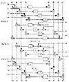
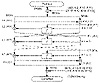
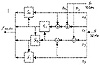
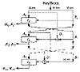
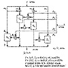
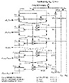

| Previous | Table of Contents | Next |
Cryptanalysis of Madryga
Researchers at Queensland University of Technology [675] examined Madryga, along with several other block ciphers. They observed that the algorithm didn’t exhibit the plaintext-ciphertext avalanche effect. Additionally, many ciphertexts had a higher percentage of ones than zeros.
Although I know of no formal analysis of the algorithm, it doesn’t look terribly secure. A cursory review by Eli Biham led to the following observations [160]:
The algorithm consists only of linear operations (rotations and XOR), which are slightly modified depending on the data.
There is nothing like the strength of DES’s S-boxes.
The parity of all the bits of the plaintext and the ciphertext is a constant, depending only on the key. So, if you have one plaintext and its corresponding ciphertext, you can predict the parity of the ciphertext for any plaintext.
None of this is damning in itself, but it doesn’t leave me with a good feeling about the algorithm. I do not recommend Madryga.
NewDES was designed in 1985 by Robert Scott as a possible DES replacement [1405, 364]. The algorithm is not a DES variant, as its name might imply. It operates on 64-bit blocks of plaintext, but it has a 120-bit key. NewDES is simpler than DES, with no initial or final permutations. All operations are on entire bytes. (Actually, NewDES isn’t anything like a new version of DES; the name is unfortunate.)
The plaintext block is divided into eight 1-byte sub-blocks: B0, B1,..., B6, B7. Then the sub-blocks go through 17 rounds. Each round has eight steps. In each step, one of the sub-blocks is XORed with some key material (there is one exception), substituted with another byte via an f function, and then XORed with another sub-block to become that sub-block. The 120-bit key is divided into 15 key sub-blocks: K0, K1,..., K13, K14. The process is easier to understand visually than to describe. Figure 13.2 shows the NewDES encryption algorithm.
The f-function is derived from the Declaration of Independence. See [1405] for details.
Scott showed that every bit of the plaintext block affects every bit of the ciphertext block after only 7 rounds. He also analyzed the f function and found no obvious problems. NewDES has the same complementation property that DES has [364]: If EK(P) = C, then EK´(P´) = C´. This reduces the work required for a brute-force attack from 2120 steps to 2119 steps. Biham noticed that any change of a full byte, applied to all the key and data bytes, leads to another complementation property [160]. This reduces a brute-force attack further to 2112 steps.

Figure 13.2 NewDES.
This is not damning, but Biham’s related-key cryptanalytic attack can break NewDES with 233 chosen-key chosen-plaintexts in 248 steps [160]. While this attack is time-consuming and largely theoretical, it shows that NewDES is weaker than DES.
FEAL was designed by Akihiro Shimizu and Shoji Miyaguchi from NTT Japan [1435]. It uses a 64-bit block and a 64-bit key. The idea was to make a DES-like algorithm with a stronger round function. Needing fewer rounds, the algorithm would run faster. Unfortunately, reality fell far short of the design goals.
Description of FEAL
Figure 13.3 is a block diagram of one round of FEAL. The encryption process starts with a 64-bit block of plaintext. First, the data block is XORed with 64 key bits. The data block is then split into a left half and a right half. The left half is XORed with the right half to form a new right half. The left and new right halves go through n rounds (four, initially). In each round the right half is combined with 16 bits of key material (using function f) and XORed with the left half to form the new right half. The original right half (before the round) forms the new left half. After n rounds (remember not to switch the left and right halves after the nth round) the left half is again XORed with the right half to form a new right half, and then the left and right halves are concatenated together to form a 64-bit whole. The data block is XORed with another 64 bits of key material, and the algorithm terminates.

Figure 13.3 One round of FEAL.
Function f takes the 32 bits of data and 16 bits of key material and mixes them together. First the data block is broken up into 8-bit chunks, then the chunks are XORed and substituted with each other. Figure 13.4 is a block diagram of function f. The two functions S0 and S1, are defined as:
The same algorithm can be used for decryption. The only difference is: When decrypting, the key material must be used in the reverse order.
Figure 13.5 is a block diagram of the key-generating function. First the 64-bit key is divided into two halves. The halves are XORed and operated on by function fk, as indicated in the diagram. Figure 13.6 is a block diagram of function fk. The two 32-bit inputs are broken up into 8-bit blocks and combined and substituted as shown. S0 and S1 are defined as just shown. The 16-bit key blocks are then used in the encryption/decryption algorithm.
On a 10 megahertz 80286 microprocessor, an assembly-language implementation of FEAL-32 can encrypt data at a speed of 220 kilobits per second. FEAL-64 can encrypt data at a speed of 120 kilobits per second [1104].

Figure 13.4 Function f.

Figure 13.5 Key processing part of FEAL.

Figure 13.6 Function fK.
Cryptanalysis of FEAL
FEAL-4, FEAL with four rounds, was successfully cryptanalyzed with a chosen-plaintext attack in [201] and later demolished [1132]. This later attack, by Sean Murphy, was the first published differential-cryptanalysis attack and required only 20 chosen plaintexts. The designers retaliated with 8-round FEAL [1436,1437,1108] which Biham and Shamir cryptanalyzed at the SECURICOM ’89 conference[1427]. Another chosen-plaintext attack, using only 10,000 blocks, against FEAL-8 [610] forced the designers to throw up their hands and define FEAL-N [1102,1104], with a variable number of rounds (greater than 8, of course).
Biham and Shamir used differential cryptanalysis against FEAL-N; they could break it more quickly than by brute force (with fever than 264 chosen plaintext encryptions) for N less than 32 [169]. FEAL-16 required 228 chosen plaintexts or 246.5 known plaintexts to break. FEAL-8 required 2000 chosen plaintexts or 237.5 known plaintexts to break. FEAL-4 could be broken with just eight carefully selected chosen plaintexts.
The FEAL designers also defined FEAL-NX, a modification of FEAL, that accepts 128-bit keys (see Figure 13.7)[1103,1104]. Biham and Shamir showed that FEAL-NX with a 128-bit key is just as easy to break as FEAL-N with a 64-bit key, for any value of N [169]. Recently FEAL-N(X)S has been proposed, which strengthens FEAL with a dynamic swapping function [1525].
There’s more. Another attack against FEAL-4, requiring only 1000 known plaintexts, and against FEAºL-8, requiring only 20,000 known plaintexts, was published in [1520]. Other attacks are in [1549,1550]. The best attack is by Mitsuru Matsui and Atshuiro Yamagishi [1020]. This is the first use of linear cryptanalysis, and can break FEAL-4 with 5 known plaintexts, FEAL-6 with 100 known plaintexts and FEAL-8 with 215 known plaintexts. Further refinements are in [64]. Differential-linear cryptanalysis can break FEAL-8 with only 12 chosen plaintexts [62]. Whenever someone discovers a new cryptanalytic attack, he always seems to try it out on FEAL first.
Patents
FEAL is patented in the United States [1438] and has patents pending in England, France, and Germany. Anyone wishing to license the algorithm should contact the Intellectual Property Department, NTT, 1-6 Uchisaiwai-cho, 1-chome, Chiyoda-ku, 100 Japan.
REDOC II is another block algorithm, designed by Michael Wood for Cryptech, Inc. [1613,400]. It has a 20-byte (160-bit) key and an 80-bit block.
REDOC II performs all of its manipulations—permutations, substitutions, and key XORs—on bytes; the algorithm is efficient in software. REDOC II uses variable function tables. Unlike DES, which has a fixed (albeit optimized for security) set of permutation and substitution tables, REDOC II uses a key-dependent and plaintext-dependent set of tables (S-boxes, actually). REDOC II has 10 rounds; each round is a complicated series of manipulations on the block.

Figure 13.7 FEAL-NX key schedule.
Another unique feature in the design is the use of masks. These are numbers derived from the key table that are used to select the tables in a given function within a given round. Both the value of the data and the masks are used together to select the function tables.
Assuming that brute force is the most efficient means of attack, REDOC II is very secure: 2160 operations are required to recover the key. Thomas Cusick cryptanalyzed 1 round of REDOC II, but he was unable to extend the attack to multiple rounds [400]. Using differential cryptanalysis, Biham and Shamir were able to successfully cryptanalyze 1 round of REDOC II with 2300 chosen-plaintexts [170]. This attack cannot be extended to multiple rounds, but they were able to obtain three mask values after 4 rounds. I know of no other cryptanalysis.
| Previous | Table of Contents | Next |
){kind=link}
){kind=link}
){kind=link}
){kind=link}
){kind=link}
){kind=link}
){kind=link}
){kind=link}
){kind=link}
){kind=link}
){kind=link}
){kind=link}